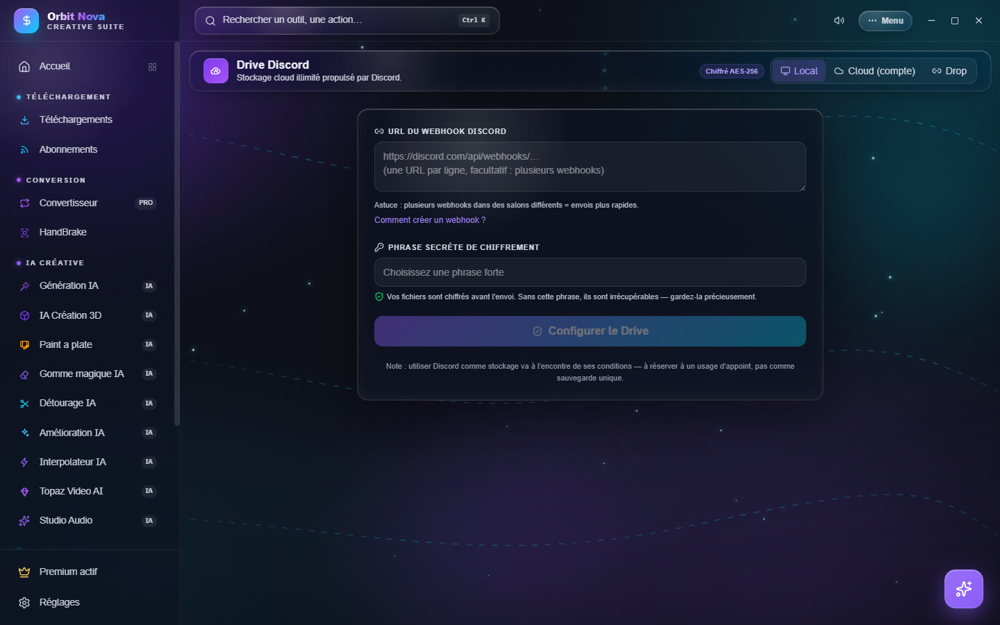

Drive Discord
Le Drive Discord stocke vos fichiers en ligne en les découpant en morceaux chiffrés (AES-256) envoyés sur Discord. Vos fichiers sont chiffrés sur votre PC avant l'envoi : ni Discord ni le serveur d'Orbit ne peuvent les lire.
Discord n'est pas fait pour stocker des fichiers et ses conditions d'utilisation ne le prévoient pas : un salon ou un compte peut être supprimé. Gardez toujours une autre copie de vos fichiers importants.
L'onglet a trois modes, en haut à droite : Local, Cloud (compte) et Drop.


Mode Local
Tout reste sur votre PC (la liste des fichiers et la clé), les morceaux vont dans votre propre salon Discord.
- Sur Discord, choisissez ou créez un salon privé.
- Paramètres du salon › Intégrations › Webhooks › Nouveau webhook, puis Copier l'URL du webhook.
- Dans Orbit, collez-la dans URL du webhook Discord. Plusieurs webhooks (un par ligne, dans des salons différents) rendent les envois plus rapides.
- Choisissez une Phrase secrète de chiffrement forte, puis Configurer le Drive.
Sans la phrase secrète, personne ne peut relire les fichiers, vous non plus. Notez-la en lieu sûr : elle ne peut pas être récupérée.
À chaque ouverture, saisissez la phrase pour Déverrouiller le Drive. Verrouiller le referme.
Mode Cloud (compte)
Le mode Cloud utilise un compte Orbit : vos fichiers vous suivent sur tous vos PC.
- Créer un compte (e-mail et mot de passe) ou Se connecter.
- Choisissez une phrase secrète de chiffrement ; elle protège vos fichiers et fonctionne sur tous vos appareils.
Ensuite : Envoyer des fichiers, Nouveau dossier, Actualiser, filtrer, télécharger, supprimer. Les vidéos se lisent directement depuis le Drive. Mot de passe oublié ? envoie un code par e-mail ; il change le mot de passe de connexion, pas la phrase secrète.
Le bouton Telegram permet de stocker sur votre compte Telegram (dans vos Messages enregistrés) plutôt que sur Discord. La connexion Telegram reste sur votre PC.
Drop : partager sans compte
Drop envoie un fichier à quelqu'un, même sans compte : Orbit le chiffre avec une clé à usage unique et vous donne un code de partage. La personne colle ce code dans Drop › Récupérer pour télécharger et déchiffrer le fichier. Les Drops expirent automatiquement après un certain temps.
Les dossiers partagés (codes qui commencent par orbf1_) s'ouvrent au même endroit ; vous pouvez les
télécharger, les lire ou les Enregistrer dans mon Drive.
Partager depuis le Drive
Dans le mode Cloud, Partager un fichier ou un dossier crée un code : le contenu est rechiffré avec une clé neuve, votre clé de compte n'est jamais transmise. Donnez un titre au partage : il est visible par ceux qui ont le code.